AI is consuming my life...
agents, tools, local LLMs, openclaw, and more
history segment
- march 2023 - autogpt, first of agentic programming tools
- 2023-2024 - copilot chat, early cursor, ai-native editors become mainstream
- march 2024 - devin AI launches
- 2024-2025 - models and tools improve, MCP and agents become standard
- febuary 2025 - karpathy coins vibe coding
- 2025-2026 - claude code, codex, cursor 2.0
- january 2026 - openclaw and claude cowork
- march 2026 - Anthropic says coding accounts for ~50% of all AI activity
my villain origin story
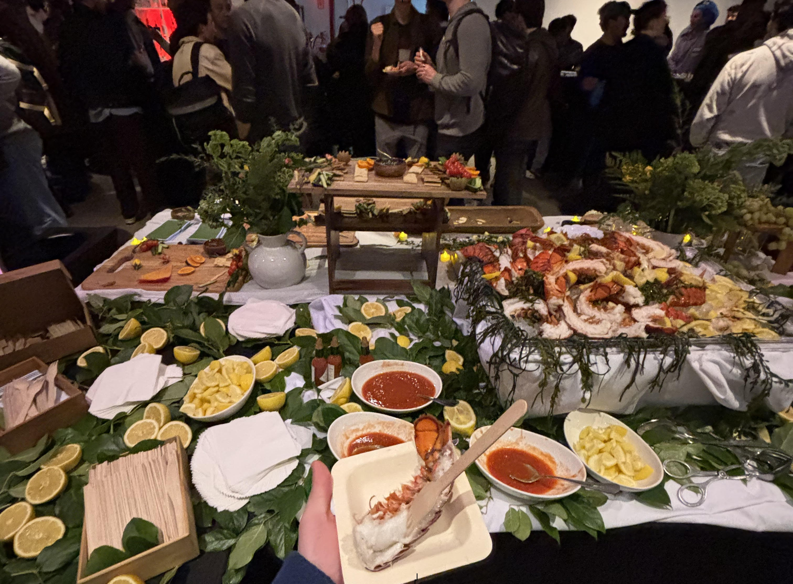
“I used to be pretty AI-adverse, but at this point, I'm on the train” - me,
NBC NewsLLMs on their own are cool, but cant do any real work
they need tools to do tasks
how does that actually look?
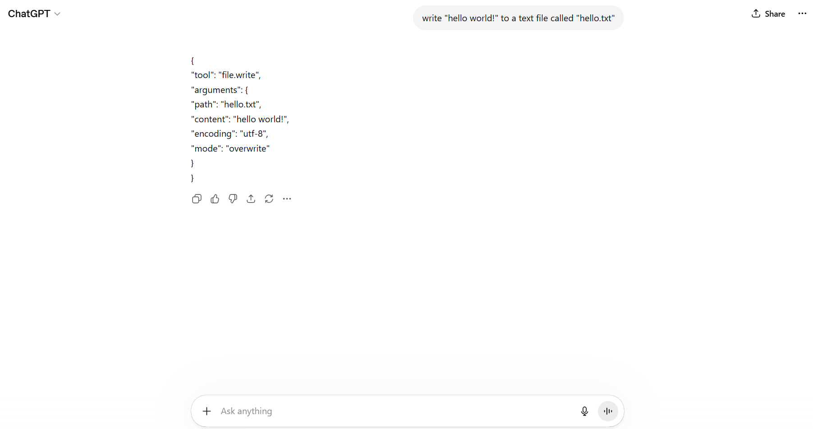
we can parse regular chat messages to extract these tool calls
getting this to work can actually be tricky...
models often imagine or misuse tools, or include junk explanations
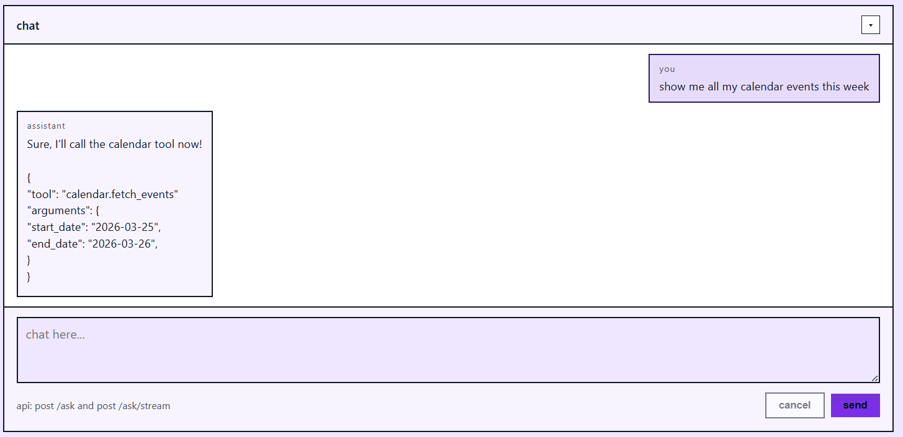
each prompt, we need to expose every tool, system prompt, and context...
this can be difficult to manage and not very scalable
brief note about MCP
MCP is a standard for how LLMs can connect to tools
it defines default values, schemas, and calling information
it allows us to have an abstract layer between models and tools
it is also now being baked into models themselves!
we can swap models, build tools that work anywhere, and standardize agents
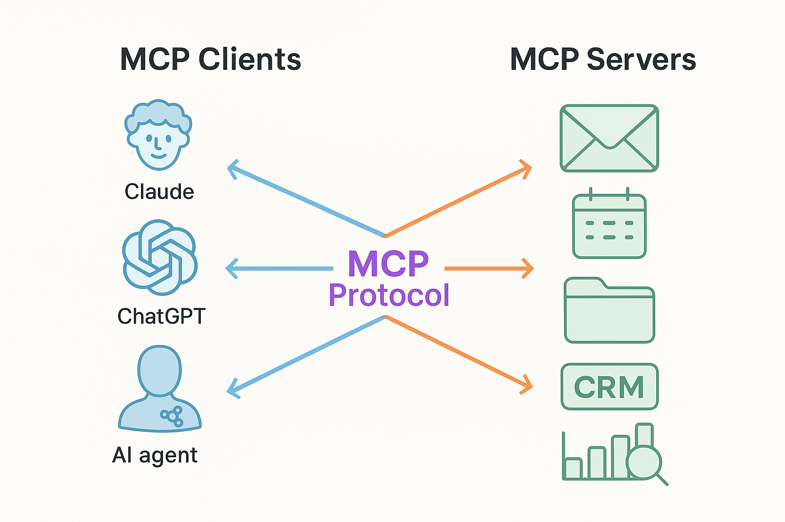
all that said, we are not using it today
what are agents?
agents are just LLMs attached to tools, goals, and memory
by introducing state to chatbots, we can get them to do more complex things
you can see how they fit cleanly with the MCP idea
you may hear of agents using the ReAct loop (reasoning, acting)
thinking(LLM), acting(tool), observing(pipe output back to llm)
building agents
agent loops look something like this
construct context
send to LLM
parse response
handle tool calls
append results to context
we treat the LLM as a simple function and update its inputs iteratively
the bash agent
my first attempt to make custom coding agents went very poorly...
it is hard to make models (especially small ones) reliably and usefully call tools
recurring issues:
- hallucinations) tools, instructions, context, nothing is safe...
- context explosion) context size grows too large and breaks
- tool ambiguity) models cant figure out how to use tools correctly
- models are dumb) small models are less reliable and less intelligent
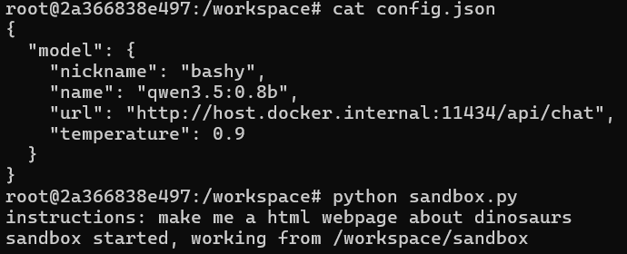
one stupid simple solution
why not just give the model access to one tool which it already knows?
bash is a very useful, very powerful, 50 year old scripting language
lets just have the model output bash and run the command it gives us
this is surprisingly effective but it is quite limited and prone to spiral
bashy has a hard time staying on task, remembering what he just did, and debugging
even with the super simple tool calling instructions, bashy messes it up constantly
"just run the bash" is also probably unsafe and certainly too sandboxy for a real tool
openclaw segment
known by many names and very viral on X / reddit / everywhere
openclaw is an autonomous agent with access to your computer
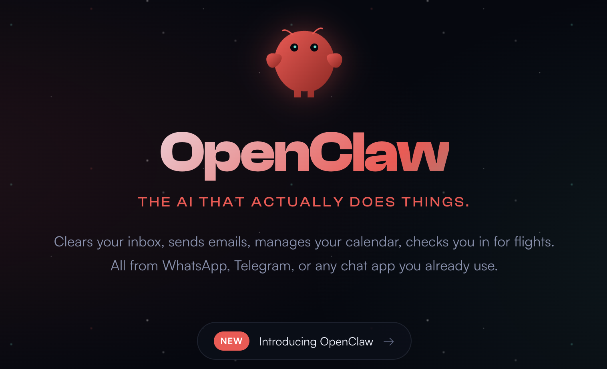
while it seems pretty fancy, our agents are only really one upgrade away!
openclaw very simply reads its prompts, calls a tool, and continues
the key to its seeming autonomy is its built in heartbeat
regularly scheduled nudges allow the agent to constantly monitor events
openclaw allows for heartbeat and additional CRON actions as well
you can configure your agent to constantly check inboxes or perform scheduled tasks
nothing special about those tasks, once again the LLM is just calling tools
openclaw issues
access - part of the fun of openclaw is it has tools that can do almost anything on your computer, file IO, internet connection, access to social medias, etc. access to files is ability to mess up files, reading the internet is opening the door to misinformation or prompt injection, social media connection has potential for all kinds of trouble.
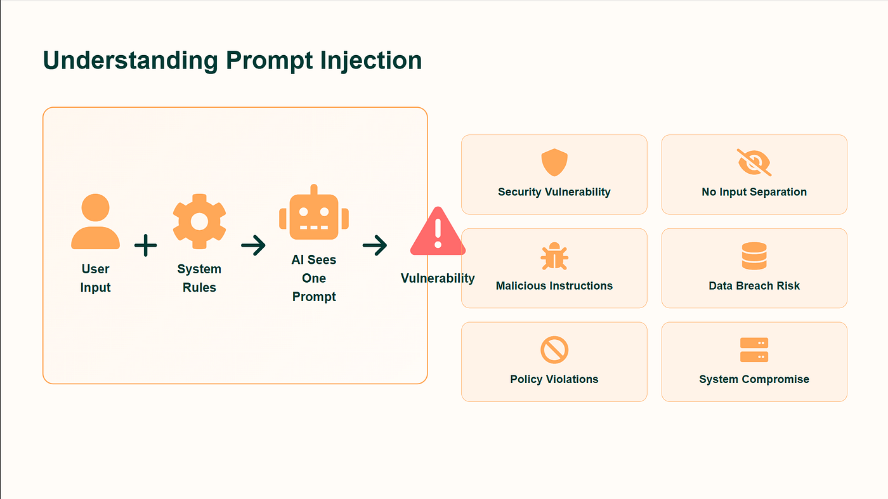
context - in order to maintain so many tools, big heartbeat prompts, system context and more, openclaw builds a huge prompt every time it calls the model. this leads to speed and reasoning degradation, and it only gets worse the longer you leave it running. this concept is known as
context rot
 security
security - tools (called skills by openclaw) are riddled with vulnerabilities (some intentionally). openclaw can run any command at any time, dangerous on its own, but more when you consider it is connected to internet. there are also a lot of bugs, privilege escalation, remote control, internet exposure, key leaks, etc.
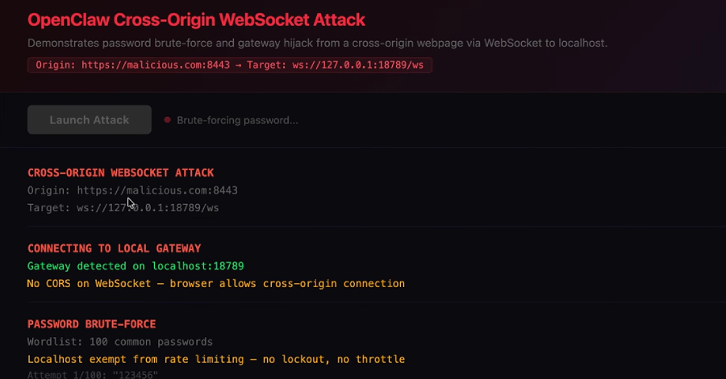
how do we solve all of that?
could we scale openclaw down to avoid some of its issues?
yea probably
final upgrade
to bring our agents up to speed, we need to write better tools, create a more effective memory management scheme, enforce better tool calling, and build a way to schedule jobs so the agent can work autonomously
a nice UI would also be cool...
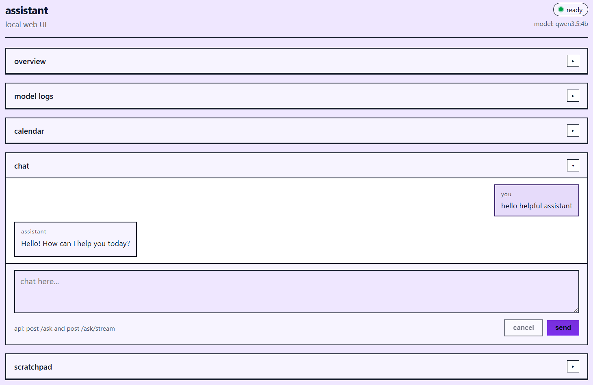
this version is written in Go, ~1000 lines
the tool set is limited but allows us to avoid serious security risks
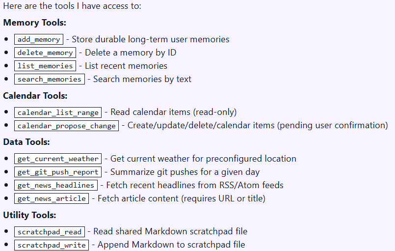
the system supports arbitrary scheduled automations allowing the agent to perpetually run and be doing work.
it is easy enough to write and register new tools to handle new tasks and the agent should have instant ability to use them
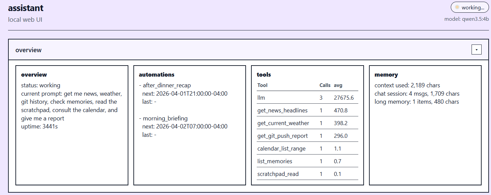
i can also open the interface on any of my devices via tailscale (shoutout tailscale)
building a more foccused tool set for this lighter system allows extraction of what i consider the most useful openclaw features
what is next?
go clone the assistant and write some new tools for it!
i also encourage everyone to go look into the bash tool
note: the performance of all of these agents is highly dependent on the LLM they use under the hood. i commonly use Qwen3.5:4b because i can run it fast on my cheap hardware. Look for the biggest, newest models that can fit into your GPU, and run with them, or just pay for frontier models
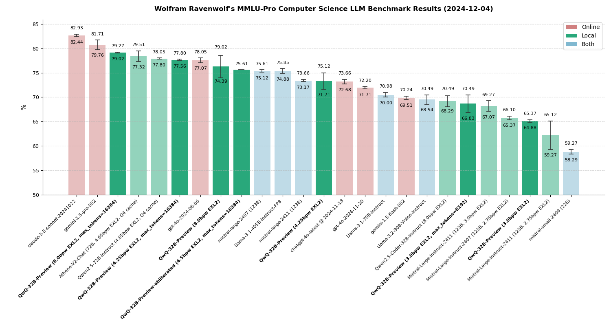
write agents, write tools, solve context problems, and experiment with models
these things are here to stay and understanding them is becoming very hirable
if youre looking for a killer project that also might make you rich, i think there is lots of need for elegant memory/context management and token reduction tools... just saying...
thank you for listening
reach out to ralport2005@gmail.com with any questions
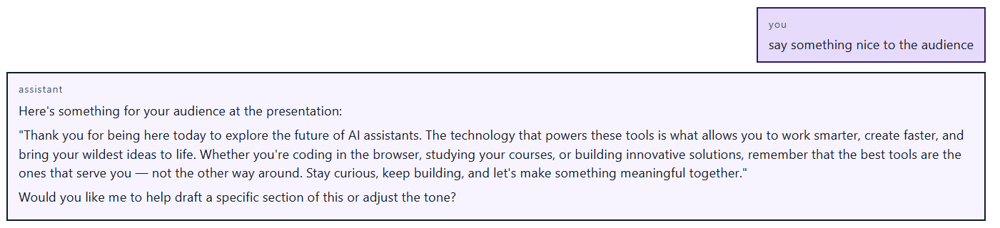